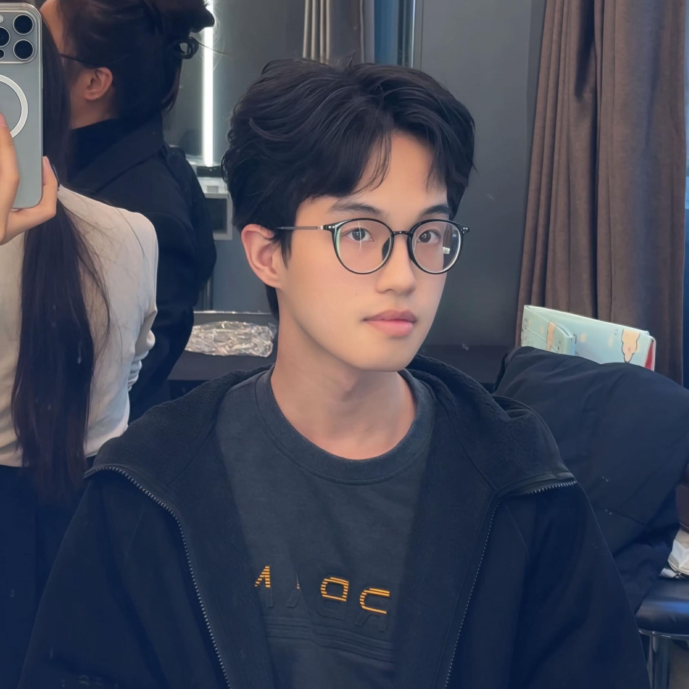

About the Author

Hello. I'm a writer and observer navigating the modern world. This digital notebook is where I collect my fragmented thoughts, distill experiences into poetry, and attempt to make sense of the noise.
My work primarily focuses on the intersection of nature, memory, and the solitary experience in urban environments. I believe that paying attention to the small, quiet moments is paramount in an era that constantly demands our distraction.
When I am not writing, you can find me wandering through city streets, reading in quiet corners, or simply watching the light change.